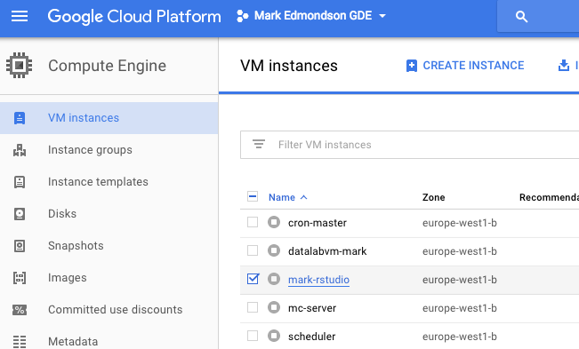
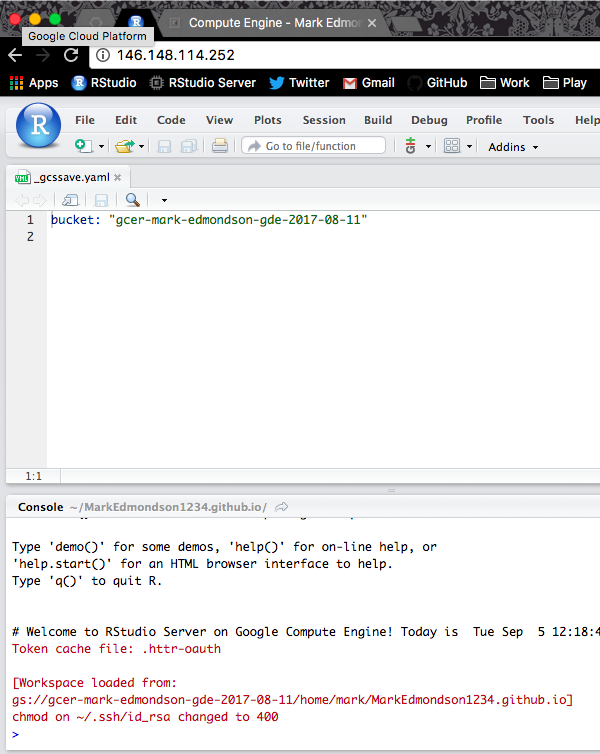
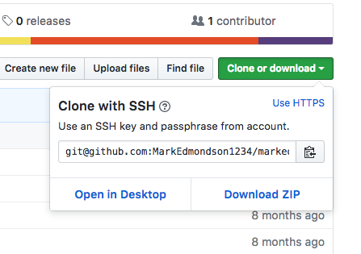
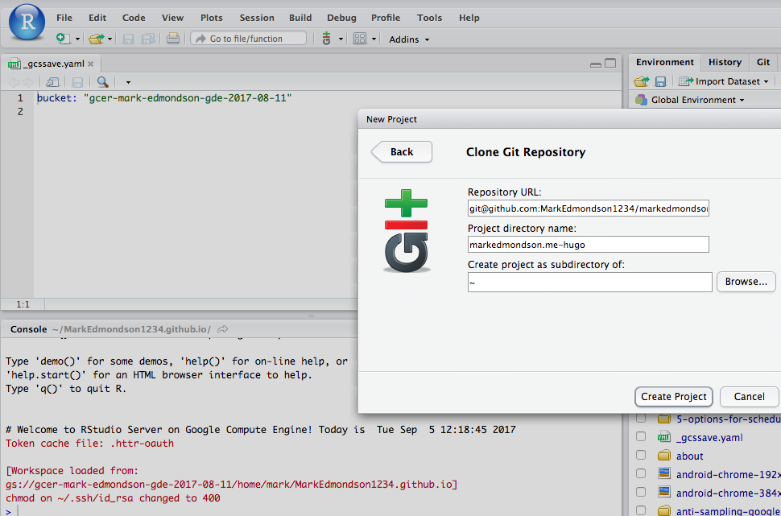
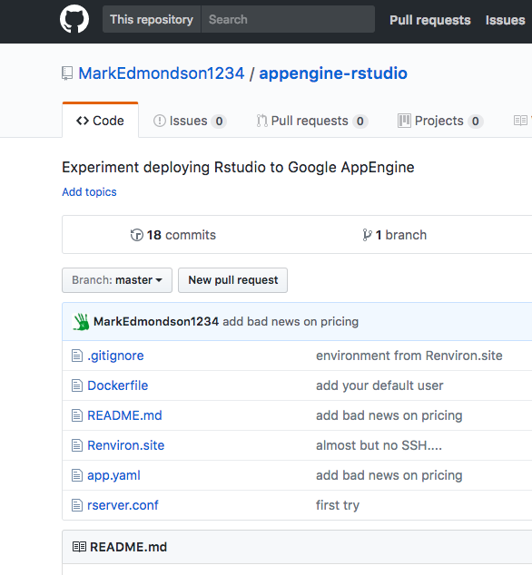

I recently got an Asus Chromebook Flip with which I’m very happy, but it did make me realise that if a Chromebook was to replace my normal desktop as my primary workstation, my RStudio Server setup would need to be more cloud native than was available up until now.
TL;DR - A how-to on making RStudio Server run on a Chromebook that automatically backs up data and configuration settings to Google Cloud Storage is on the googleComputeEngineR website here.
Broken promises of the cloud?
Whilst there are lots of other solutions around for hosting RStudio Server in the cloud, including some of my own, I don’t believe they are a serious replacement for a desktop station running RStudio.
To date I’ve treated RStudio Server as a temporary UI whilst setting up scheduled scripts and so forth, and for running workshops for students with pre-installed packages. Yes, the convenience of running RStudio in a browser and being able to launch different configurations is great, but it wasn’t a total desktop replacement for the following reasons:
- More expensive - running RStudio Server permanently in the cloud can be done for as little as 5 dollars a month, but for that you get a machine about as powerful as a Raspberry Pi. For a proper workstation with decent RAM etc, you are looking at more like 30 dollars a month, which if you’re running for 2 years is around $700 that you could have spent on a laptop that can do more things.
- More risky - keeping the only copy of your data on a cloud server is not a good idea, as I learnt to my cost when a VM’s hard disk filled up. Unable to log in, a convoluted panic to increase the disk size occurred. A physical laptop is a lot easier to troubleshoot if something goes awry.
- Not flexible enough - if you run out of RAM or want things to compute quicker, you are going to need to transfer your data and boot up another VM with stronger specs.
But isn’t the allure of cheaper, safer, more flexible computing the reason we are using the cloud in the first place?
Going Cloud Native
I believe the reason for the dichotomy between expectation and reality is due to not being “Cloud Native” enough, something I realised whilst attending this year’s Google NEXT event. There they described three phases of business cloud evolution:
- Lift and Shift - moving your existing infrastructure into equivalent cloud versions
- Separation of compute and data - abstracting out the computing away from the data the computing is running on. Essentially letting the cloud take on the roles of your hard disk vs your CPU.
- Platform-as-a-service (PaaS) - abstracting away the servers the computing and data are running on, so as to run on purely managed services such as BigQuery, Kubernetes and AppEngine
From the above, existing RStudio Server solutions are in the Lift and Shift vein, whilst what we may imagine to be The Cloud are in the more evolved options.
Docker FTW
To truly take advantage of the cloud, I believe this means you must become familiar with containers, specifically Docker. Containers are a rapidly evolving standard that makes cloud evolution possible by allowing breakout of computation, and is being embraced by all cloud providers.
Using Docker with R has other benefits. Reproducibility of R code is enhanced when you can pin the exact environment to run code within, and addresses criticisms of R that it is not production ready: normally R’s open source and rapidly evolving nature means R code you wrote two years ago may not work with the most modern R package versions.
I am in a lucky position to work on this as I have developed a niche creating Google API libraries in R. Starting with my needs from digital marketing to wrap the Search Console and Google Analytics APIs, I then used that experience to move into the more general Cloud APIs such as Cloud Storage and Compute Engine, and now get support through my Google Developer Expert status network to experiment with the Google Cloud platform.
A Persistent RStudio Server
Its with two of my R libraries, googleCloudStorageR and googleComputeEngineR, that I’ve put together something much closer to the cheap, resilient, and flexible version of the cloud I want to be using when running RStudio in the cloud.
The role of a harddrive is delegated to Google Cloud Storage, whilst RStudio is served from within Docker containers. With some new functions that are in the .Rprofile of a custom RStudio Docker image, Google Cloud Storage is called to download on startup, or upload on exit, all the files to a specific bucket. These files can include SSH and GitHub settings, or a project folder. Backups are activated by putting a _gcssave.yaml file in a folder, or via the VM’s metadata.
What this all means is:
- RStudio Server runs within its own Docker container, and can be relaunched with custom package setups
- Data is persistent between Docker containers and cloud compute instances.
- I can turn off the RStudio Server to avoid charges, then turn it on again and start from where I left off without reconfiguring git etc.
- I can work locally in one RStudio project, then switch to the cloud to work on the same project.
- SSH keys and GitHub configurations are set up only once and then automatically available across Docker containers, cloud computers and local RStudio projects.
I have a bookmark to the Google Cloud console to startup/shutdown the instance:

Once launched, I log in and configurations are auto loaded by the _gcssave.yaml configuration:

As this includes the home directory, so long as I login with the same username, and point to the same bucket, any RStudio launched (within a Docker/locally, whereever) don’t need to reconfigure Git - downloading a GitHub repo is as simple as copying the SSH GitHub URL…

…and starting a new RStudio project:

This saves me significant cost by letting me stop/start servers as and when I need them via the GCP Web UI. My data is safer than keeping it on my local harddrive, and switching to a bigger VM takes seconds since all data and code upload/download automatically.
The details for the configuration setup is here on the googleComputeEngineR website, for which you’ll need the latest development versions of googleComputeEngineR and googleCloudStorageR.
RStudio-as-a-service?
Whats next? Could this evolve further into a RStudio-as-a-service offering? To qualify, we would need to not worry about starting or stopping servers at all, and scale under any load.
Well, prompted by this blog post I had a good look. It IS possible to deploy RStudio on App Engine and I got excited, but unfortunately the minimum number of permanent instances on a flexible App Engine app is 1, so all told for a solo analyst it is a more expensive solution than running a VM that you stop and start yourself. However, if you had enough demand to pay for 1 VM 24 hours a day (~$30 a month), it does start to make sense to scale on App Engine. A setup that does that is on this GitHub repo running RStudio on App Engine.

Using R on App Engine is possible due to App Engine’s new beta support for flexible custom runtime containers. Any language deployed through a Docker container will work, something I recently worked through in a proof of concept to deploy a serverless R API using Plumber. Shiny may be another beneficiary of App Engine, although at time of writing App Engine doesn’t support the necessary websockets.
I suspect using Kubernetes, a container orchestrator upon Google Container Engine the above could be achieved, but I haven’t quite grok’d that yet so perhaps I’ll update this in the future.
You can still benefit from PaaS within R if you are using services such as BigQuery. There, analysis of large datasets is performed without you knowing how many shards of instances are being used to do so, and you can access the results within R via bigrquery/bigQueryR. I did a presentation of BigQuery’s usefulness for analytics here for MeasureCamp Copenhagen.
Summary
Of course, all this still doesn’t work if you do not have an internet connection. :) But I’m now much more comfortable using my Chromebook to start and maintain R projects, and could imagine it being my main work station.
Typical workflows include:
- Work on local RStudio
- create project _gcssave.yaml
- log off, auto-save to GCE
- Move to Chromebook
- Start up VM via the Google Cloud console
- create a new project with same name
- auto-load project
- Do code
- Shutdown (auto-save project)
- switch to local RStudio
- etc. etc.
…and:
- Save project to (private) GitHub
- Move to Chromebook
- Start up VM via the Google Cloud console
- Open RStudio Server IP
- GitHub settings autoload
- Clone GitHub repo via New RStudio Projects
- Do code, commit, push, pull
- etc. etc.
None of this would be possible without the skills of the RStudio team, Google Cloud and Rocker, so a massive thanks to them.
I’d imagine if you want to do this with another cloud provider they should have very similar services that you can build upon, let me know in the comments.